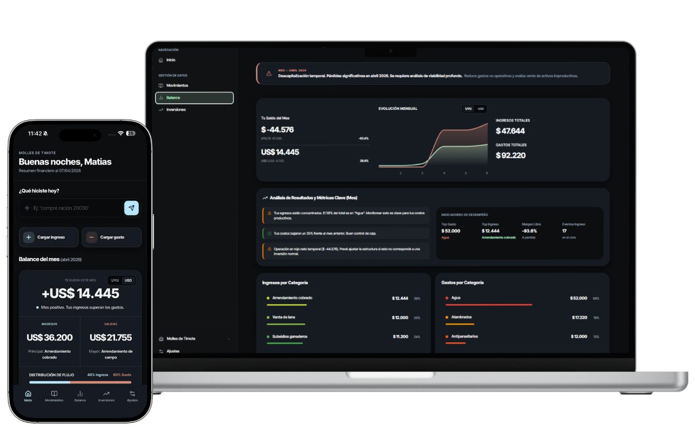
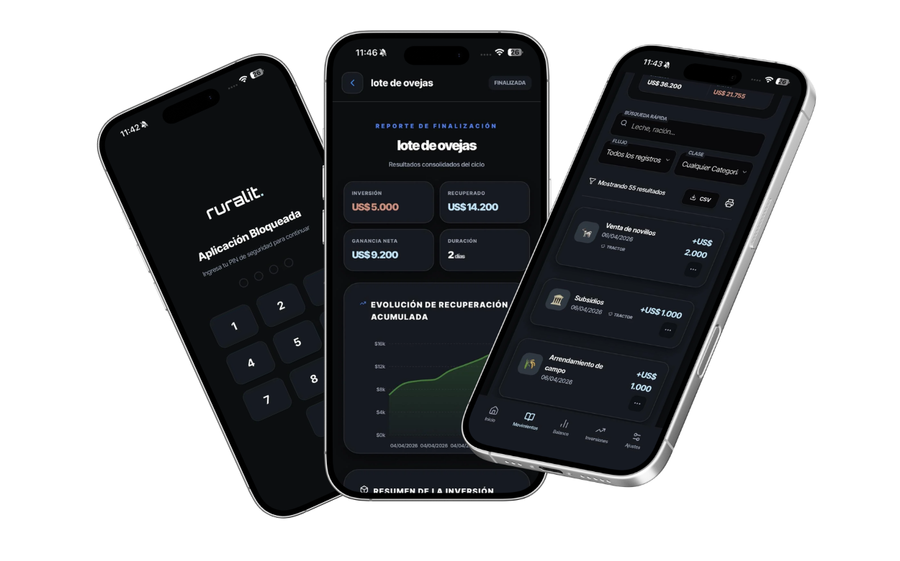

Registrá gastos, analizá inversiones y tomá decisiones con datos reales, no intuición.

Gastos pequeños que no registrás pero que a fin de año devoran tu margen operativo.
Llevás las cuentas en la cabeza o en un cuaderno. La falta de datos claros te genera incertidumbre.
Proyectos que avanzan sin claridad sobre el margen real de tu capital asignado.
Cargás gastos, inversiones o ingresos en segundos. Nuestro diccionario reconoce palabras clave para organizar todo por vos.
La plataforma clasifica automáticamente cada dato por categoría, moneda y proyecto asignado.
Accedés a tableros limpios con tu flujo de caja, margen por lote y evolución mensual en tiempo real.
Analizá qué lote o cultivo está dejando más margen neto después de gastos e impuestos.
Controlá tus ingresos y egresos proyectados para nunca quedarte sin liquidez operativa.
Identificamos gastos invisibles en categorías que suelen pasar desapercibidas.
Compará tu rendimiento mes a mes para entender la estacionalidad de tu negocio.

Seguí el margen real por lote de animales. Controlá costos de suplementación y sanidad con precisión.
Margen real por loteCalculá el costo por hectárea y el punto de equilibrio de tu siembra. Monitoreá insumos y laboreos.
Costos por hectáreaLlevá un seguimiento minucioso de inversiones en infraestructura y genética. Retorno a largo plazo.
Seguimiento de inversión"Antes no sabía si realmente tenía margen al cerrar un lote. Ahora lo veo claro desde el primer día."
"La facilidad para cargar gastos desde el teléfono mientras estoy en el campo cambió todo mi sistema."
Dejá de operar por intuición. Unite a los productores que ya toman decisiones basadas en datos.